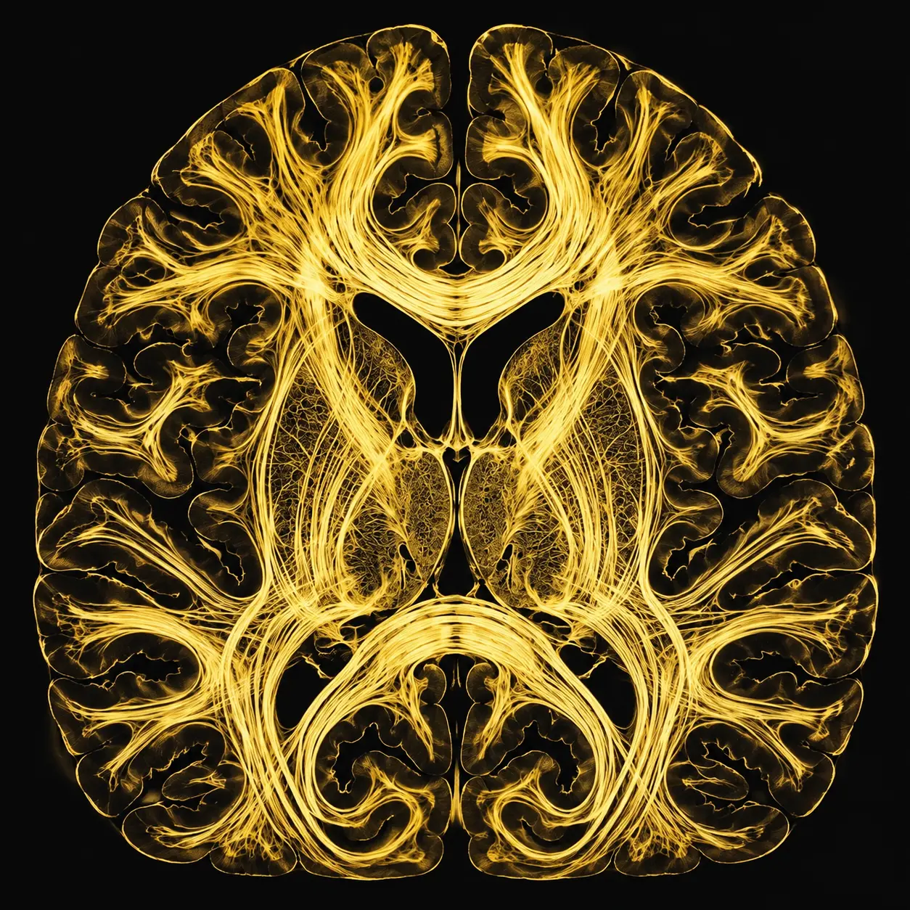
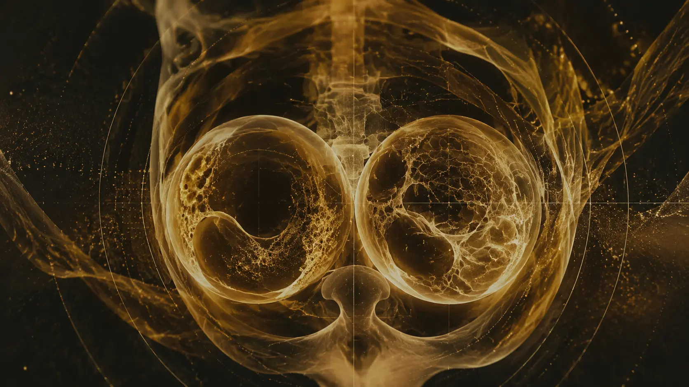

SEE THE SYSTEM
How should the normal system work?

REMEMBER THE WHAT
We begin with the mechanism, show what changes in the body and finish at the bedside.
The aim is not another pile of notes. It is a mental model you can use when a lecture, examination or patient makes the topic relevant.
How should the normal system work?
Where and why does it go wrong?
What should you notice and do next?
Search by what you noticed—or browse the same cases through body systems, specialties and clinical presentations. Every case begins with a child and follows the mechanism.
Move from the radiograph to embryology, anatomy, obstruction and immediate priorities.
Use circulation and oxygen delivery to reason through a cyanotic presentation.
Separate pain, weakness and coordination before locating the physiological problem.
Understand why age changes risk, investigation thresholds and clinical decisions.
Follow airway narrowing, work of breathing and respiratory compensation toward failure.
No cases match that search yet. Try a broader clinical term, body system or presentation.

[FEATURED LESSON · 01]From a prenatal ultrasound or neonatal radiograph to the anatomy behind duodenal obstruction.
Follow RAS–MAPK signalling from gene variant to growth, cardiac, skin and neurodevelopmental findings.
Focused lessons that respect clinical time.
Diagrams and causal steps before dense prose.
Come back whenever the pattern matters again.
I enjoy teaching, and I hope MeducateMe helps others find some of the same joy in medicine that I have felt throughout most of my life.
Start with one mechanism. Leave with a clinical mental model.
Read the case as you would meet it clinically. Notice the pattern before reaching for a diagnosis.
Maya, aged 12, has three weeks of thirst, frequent urination and weight loss. Today she has abdominal pain, vomiting and unusually deep breathing.
Commit to an answer before seeing the tests. The purpose is to expose your reasoning—not to catch you out.
Which diagnosis best unifies Maya’s presentation?
Look for a diagnosis that explains the symptoms developing over weeks as well as today’s breathing pattern.
Before DKA makes sense, insulin has to mean more than “a hormone that lowers glucose”. It is the body's signal that fuel is available.
Insulin signals the fed state.
Muscle takes up glucose; liver stores rather than produces it.
Insulin restrains lipolysis and therefore ketone production.
Insulin promotes GLUT4-mediated glucose uptake and glycogen synthesis.
Insulin suppresses glycogenolysis and gluconeogenesis and favours glycogen formation.
Insulin suppresses hormone-sensitive lipase, limiting release of free fatty acids.
Absolute insulin deficiency plus relatively unopposed counter-regulatory hormones creates the two processes that define DKA.
Do not memorise the symptom list. Predict each symptom from the mechanism.
Why does hyperglycaemia produce both polyuria and intense thirst?
Water and urinary calorie loss combine with a catabolic state: lipolysis and proteolysis continue despite extracellular glucose abundance.
Ketosis, acidaemia, dehydration and disturbed gastrointestinal function contribute. DKA can mimic an acute abdomen.
Often accompanies significant ketoacidosis; persistence after metabolic improvement should make you reconsider another abdominal diagnosis.
Deep breathing is not primarily a respiratory disease. It is a compensatory response to metabolic acidosis.
Why does metabolic acidosis produce Kussmaul breathing?
Investigations are useful when you know which part of the mechanism each one is measuring.
Serum potassium is 4.7 mmol/L. What does that tell you about total-body potassium?
Once you understand what is broken, each intervention has a precise physiological job.
Glucose has fallen substantially but ketones and acidosis persist. Why might dextrose be added while insulin continues?
Replace intravascular/extracellular losses, support perfusion and renal function, and calculate ongoing replacement using the current paediatric pathway.
Insulin suppresses lipolysis and hepatic ketone production. Current UK paediatric guidance uses continuous IV insulin after initial fluid therapy and no IV insulin bolus.
Total-body stores are depleted. Insulin and metabolic recovery move potassium intracellularly, so replacement and serial monitoring are integral to treatment.
When glucose falls before ketoacidosis has resolved, dextrose allows continued insulin without causing hypoglycaemia.
Use the current BSPED/local paediatric DKA pathway for exact fluids, insulin, potassium and monitoring. Neurological deterioration requires urgent senior assessment and treatment; cerebral injury in DKA is multifactorial and should not be reduced to the simplistic idea that “fluids cause cerebral oedema”.
A seven-year-old with type 1 diabetes has a pump interruption. She is vomiting and breathing deeply. Glucose 14.2 mmol/L, blood ketones 4.8 mmol/L, venous pH 7.19.
Why is the relatively modest glucose falsely reassuring?
Explain Maya in a causal chain: normal insulin action → what failed → why each symptom/sign appeared → why each test was chosen → why each treatment works.